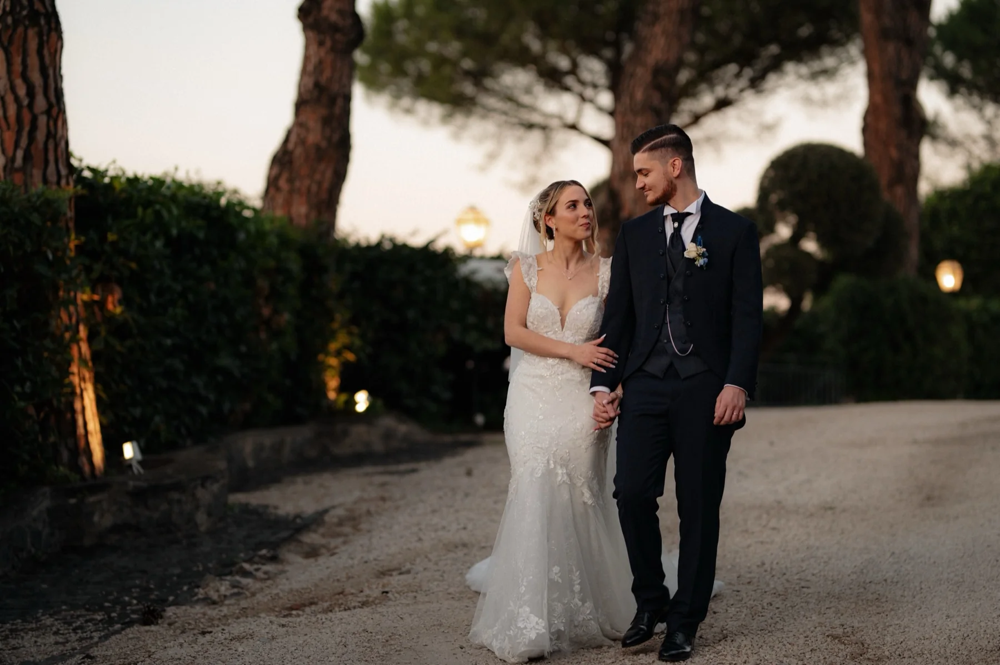
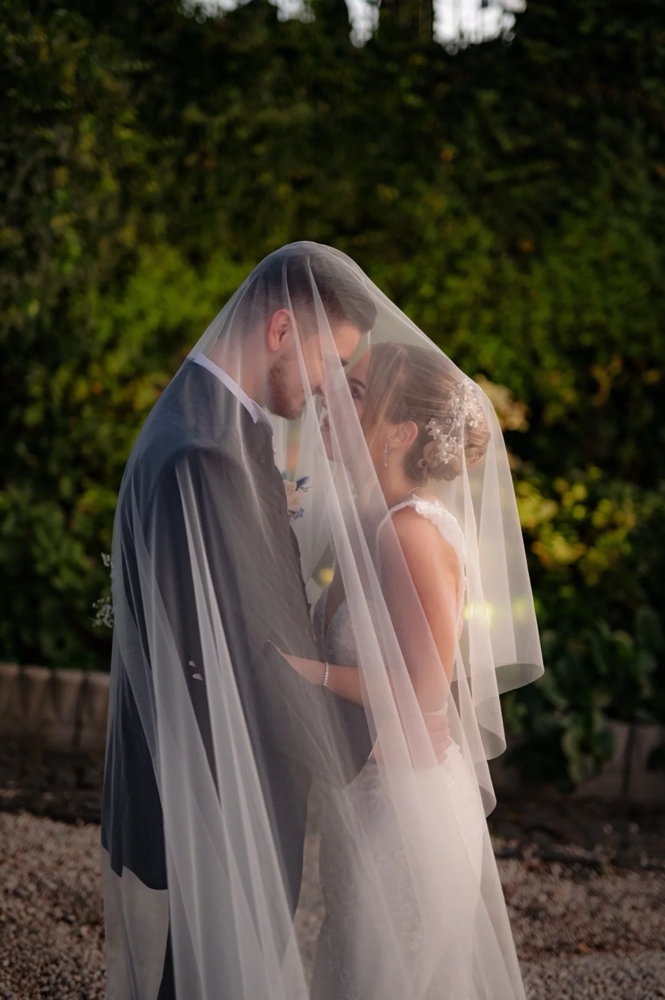
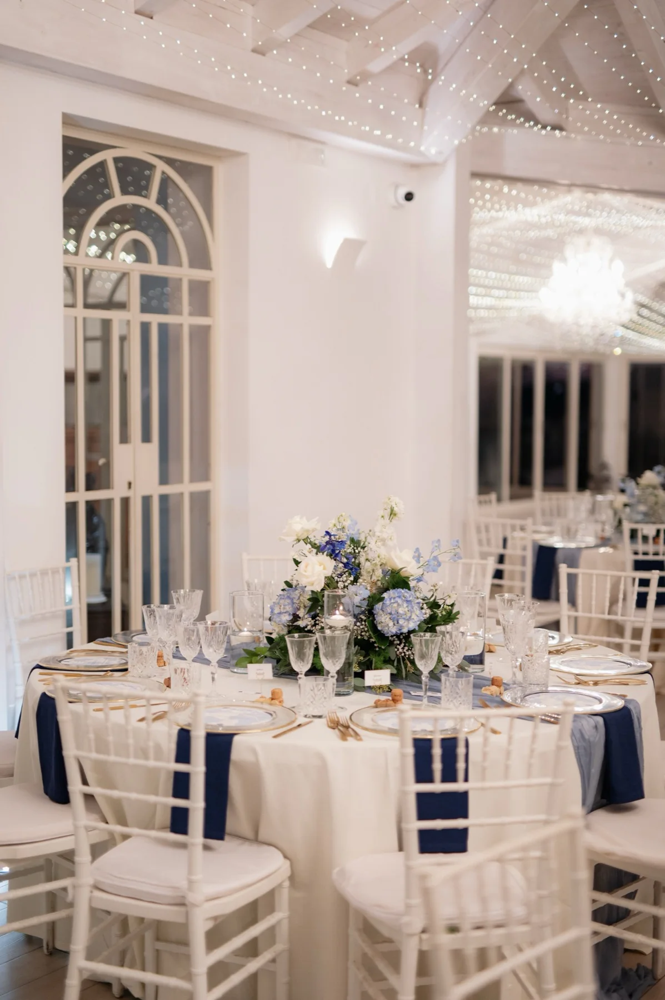

Giulia&Marco
12 giugno 2027
Il 12 giugno 2027 ci sposiamo. Sarà una giornata lunga e piena di luce, e il pensiero più bello è passarla con voi.

Come è cominciata
Ci siamo conosciuti per caso, sotto la stessa pensilina, in un pomeriggio di pioggia. L'autobus non arrivava e abbiamo cominciato a parlare.
Da allora non abbiamo più smesso. Sette anni, tre case e un numero imprecisato di viaggi dopo, abbiamo deciso di dirci di sì.
Giugno 2027
Sabato 12 giugno, alle 16:00
mancano
Il nostro giorno
Arrivo e aperitivo
Nel giardino di Villa dei Cedri, all'ombra dei pini.
Cerimonia
Villa dei Cedri, via del Lago 2, Sirmione.
Apri in Google MapsCena
Grand Hotel Riviera, lungolago 8, Sirmione.
Apri in Google MapsFesta
Si balla finché ce la facciamo.

Cosa indossare
Abito da sera. Se vi va, lasciatevi ispirare dai colori della giornata. Il bianco lo lasciamo alla sposa.
- Blu notte
- Ortensia
- Rosa
- Cipria
Un pensiero per noi
Averci accanto è già il regalo più bello. Se volete aggiungere qualcosa, potete contribuire al nostro viaggio di nozze.
IT00 X000 0000 0000 0000 0000 000
Intestato a Giulia e Marco
Ci vediamo il 12 giugno
Con amore, Giulia e MarcoG&M
12 · 06 · 2027